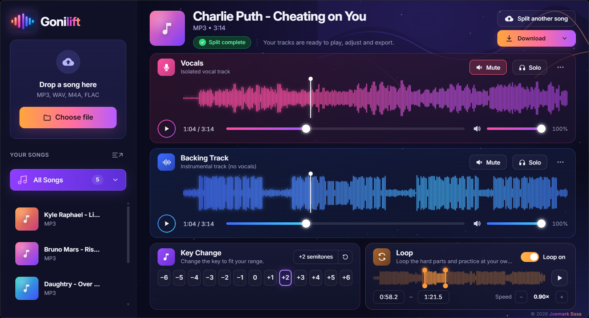

How to practise singing with a backing track
Singing along with the original recording feels good, but it hides your mistakes: the singer covers for you. Practising with a backing track shows you exactly where you are. Here's a six-step routine that takes you from "I sort of know it" to "I can sing it alone".
1. Get a clean backing track and an isolated vocal
You'll want both: the backing track to sing over, and the vocal on its own to study phrasing and breaths. An AI vocal remover like Gonilift makes both from any song in about a minute.
2. Start with the singer as a quiet guide
Don't mute the singer straight away. Turn the vocal track down to about 20 to 30 percent, so you can still hear the melody without leaning on it.
3. Slow the hard parts down, without changing the key
Fast runs and wordy verses are easier at 0.8 or 0.9× speed. Practise slow until it's clean, then step back up to 1.0×. A good player slows the music without lowering the pitch, so you're still practising the real notes.
4. Loop the line you keep missing
Set a loop around the one or two lines that trip you up and repeat them ten times in a row. In Gonilift you drag two orange handles around the part and switch the loop on.

5. Move it into your key
If the high notes strain, lower the song by a semitone or two. Here's how to find your key.
6. Mute the singer and record yourself
Finally, mute the vocal completely and sing the whole song. Record it on your phone and listen back the next day. You'll hear what to fix far more clearly than while you're singing.
Gonilift is free for Windows: download it here.